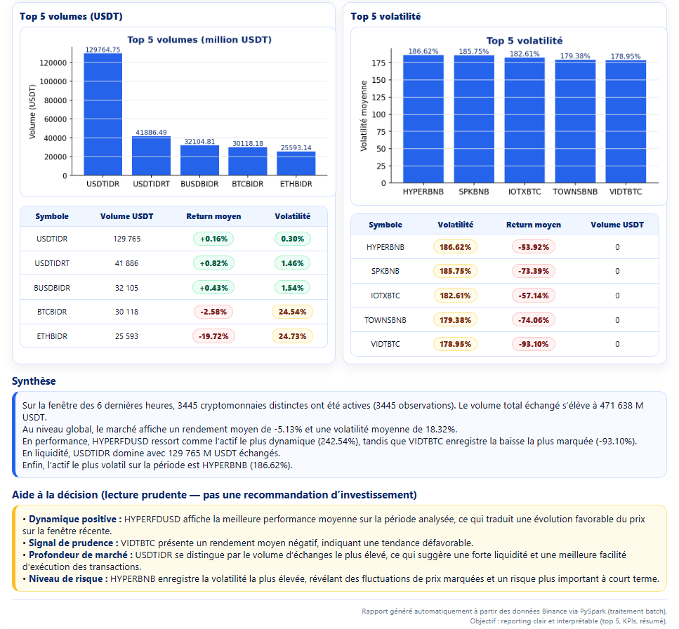
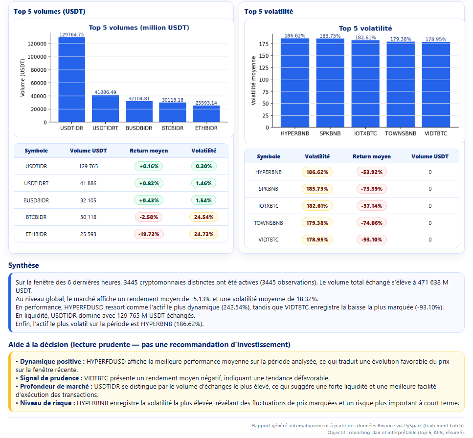

6 Cas de traitement batch
Cette section présente de manière progressive et structurée la mise en œuvre du traitement batch appliqué aux données de marché issues de la plateforme Binance. L’objectif est de décrire clairement l’architecture mise en place, les choix techniques réalisés et les différentes étapes du traitement, depuis la préparation de l’environnement jusqu’à l’automatisation complète.
6.1 Mise en place de l’environnement de travail
Le traitement batch a été réalisé sur une machine unique, configurée de manière à reproduire une chaîne complète de traitement Big Data à échelle locale. Cette étape vise à garantir que l’ensemble du pipeline puisse fonctionner de manière cohérente, reproductible et autonome.
6.1.1 Outils et logiciels nécessaires
Plusieurs composants ont été installés afin de couvrir l’ensemble des besoins du projet.
Python
Python constitue le langage de pilotage du projet. Il est utilisé pour orchestrer les scripts, interagir avec Apache Spark via PySpark, générer les rapports HTML et automatiser l’exécution du pipeline.PostgreSQL
PostgreSQL est utilisé comme système de gestion de base de données relationnelle. Il assure le stockage persistant et structuré des données de marché collectées depuis Binance.
Dans le cadre du projet, PostgreSQL a été téléchargé depuis le site officiel (PostgreSQL: Downloads), puis une base de données nomméecrypto_dba été créée, cette base contient une tablebinance_tickersdestinée à recevoir les observations de marché. PostgreSQL joue ici le rôle de couche de stockage intermédiaire entre la collecte et l’analyse.Java
Apache Spark étant développé en Scala et exécuté sur la Java Virtual Machine (JVM), l’installation de Java est indispensable. Même si les traitements sont écrits en Python (PySpark), la présence de Java est indispensable pour :- lancer Spark,
- gérer l’exécution distribuée,
- assurer la communication entre les différents composants internes de Spark.
Sans Java, Spark ne peut tout simplement pas fonctionner.
6.1.2 Architecture générale et composants intégrés
L’architecture retenue repose sur une séparation claire entre la collecte, le stockage et le traitement analytique.
Les données de marché ne sont pas traitées directement lors de leur réception. Elles sont d’abord stockées dans PostgreSQL, ce qui permet de conserver un historique fiable et de découpler la phase de collecte de la phase d’analyse.
Script d’ingestion des données
Un script d’ingestion indépendant, nomméAPI_Postgres, est chargé de :- se connecter à l’API de Binance,
- récupérer les données de marché,
- insérer ces données dans la table
binance_tickers.
Connexion entre Spark et PostgreSQL (driver JDBC)
Apache Spark n’accède pas directement aux bases de données relationnelles. Pour établir la communication avec PostgreSQL, un driver JDBC PostgreSQL a été téléchargé et ajouté au projet sous la forme d’un fichier.jar, placé dans le dossierjars.Ce driver joue le rôle d’interface :
- Spark envoie des requêtes via JDBC,
- PostgreSQL exécute ces requêtes,
- les résultats sont renvoyés à Spark sous forme de DataFrame.
Grâce à ce mécanisme, Spark peut lire les données de la table binance_tickers comme s’il s’agissait de données natives.
Centralisation des paramètres de connexion
Les paramètres de connexion à PostgreSQL (hôte, port, nom de la base, utilisateur, mot de passe) ont été regroupés dans un module Python distinct, nommé config_binance. Cette organisation présente plusieurs avantages :elle évite de dupliquer les informations de connexion dans plusieurs scripts,
elle améliore la lisibilité du code,
elle facilite la maintenance,
elle rend le projet facilement reproductible sur une autre machine.
Ainsi, un nouvel utilisateur souhaitant reproduire le projet n’a besoin que : - d’installer PostgreSQL, - de créer la table binance_tickers, - de renseigner ses propres paramètres de connexion dans ce module, - puis d’exécuter les scripts Spark sans autre modification.
6.3 Connexion aux données et sélection du dernier batch
Le cœur du traitement batch repose sur l’exploitation des données de marché issues de Binance et stockées de manière persistante dans la base de données PostgreSQL.
6.3.1 Lecture des données avec Apache Spark
Dans un premier temps, une session Spark est créée et configurée afin d’utiliser le driver JDBC PostgreSQL. Cette configuration permet à Spark d’établir une connexion directe avec la base relationnelle.
À partir de cette session, la table binance_tickers est lue et chargée dans un DataFrame Spark, qui constitue la structure centrale pour l’ensemble des traitements analytiques réalisés par la suite.
6.3.2 Notion de batch et rôle de l’horodatage run_ts
La table binance_tickers est alimentée de manière régulière par le script d’ingestion.
Chaque insertion de données correspond à un lot de données (batch) et est associée à un horodatage spécifique, stocké dans la colonne run_ts.
Cet horodatage joue un rôle clé : il permet d’identifier précisément à quel batch appartient chaque enregistrement.
Afin de garantir un reporting à jour tout en limitant les coûts de calcul, le traitement Spark ne s’applique pas à l’ensemble de l’historique, mais uniquement au dernier batch disponible. Pour cela, la démarche suivante est adoptée :
- identification de la valeur maximale de
run_tsdans la table ; - filtrage du DataFrame afin de ne conserver que les lignes correspondant à ce
run_tsmaximal.
Ainsi, chaque exécution du script travaille uniquement sur la fenêtre de données la plus récente, sans retraiter l’historique complet des observations.
6.3.3 Notion de ticker et structure des données de marché
Dans le cadre de ce projet, un ticker désigne une paire de trading fournie par l’API Binance et identifiée par le champ symbol (par exemple : BTCUSDT, ETHUSDT).
Chaque symbol représente un marché unique, correspondant à l’échange d’une cryptomonnaie contre une devise de référence (généralement l’USDT). Une même cryptomonnaie (par exemple le Bitcoin) peut donc apparaître dans plusieurs tickers, mais chaque ticker reste distinct.
Au sein d’un même batch, un ticker peut apparaître plusieurs fois sur la période observée, ce qui justifie la construction d’indicateurs agrégés (rendement moyen, volatilité, volumes échangés, etc.) afin de résumer et d’interpréter correctement le comportement du marché.
6.4 Enrichissement et construction des indicateurs de marché
Les données brutes issues de Binance (prix d’ouverture, de clôture, plus haut, plus bas, volumes) sont ensuite enrichies afin de produire des indicateurs plus interprétables.
Les principales transformations réalisées sont :
- calcul du spread de prix (différence entre le plus haut et le plus bas) ;
- calcul du prix médian (mid price), défini comme la moyenne du prix maximum et du prix minimum ;
- extraction d’une date au format AAAA-MM-JJ à partir du timestamp ;
- conversion du temps d’événement en secondes depuis 1970.
Les volumes sont exprimés en millions d’USDT afin de faciliter la lecture des résultats.
À partir de ces variables, trois indicateurs analytiques sont calculés :
- le rendement relatif, basé sur la variation entre le prix d’ouverture et le prix de clôture ;
- la volatilité absolue, mesurant l’amplitude des variations de prix ;
- la volatilité relative, obtenue en rapportant la volatilité absolue au prix médian.
Les cas de division par zéro sont explicitement traités afin d’éviter toute erreur de calcul.
6.5 Agrégation des résultats et classements « Top 5 »
Deux niveaux d’agrégation sont ensuite réalisés.
- Indicateurs globaux de marché :
- nombre d’échanges ;
- nombre total d’observations ;
- volume total échangé ;
- rendement moyen du marché ;
- volatilité moyenne du marché.
- Statistiques par échange :
- rendement moyen ;
- volatilité moyenne ;
- volume total échangé.
À partir de ces résultats, plusieurs classements « Top 5 » sont établis : - meilleures performances ; - plus faibles performances ; - volumes les plus élevés ; - volatilités les plus fortes.
Ces classements offrent une lecture synthétique et comparative du marché.
6.6 Génération automatisée d’un rapport HTML
Les résultats sont ensuite convertis en un rapport HTML automatisé, comprenant :
- des graphiques illustrant les classements ;
- des tableaux formatés ;
- une synthèse textuelle du comportement global du marché ;
- une section d’aide à la décision, présentée à titre informatif et non comme une recommandation d’investissement.
 

6.7 Envoi automatique du rapport par courrier électronique
Afin de faciliter le partage des résultats, un module d’envoi de courriels a été intégré au pipeline.
Le principe repose sur :
- l’utilisation d’un compte Gmail configuré avec un mot de passe d’application ;
- la construction d’un message électronique dont le contenu reprend directement le rapport HTML ;
- l’envoi du message à une liste de destinataires prédéfinie.
Ainsi, à chaque exécution du traitement batch, un nouveau rapport est généré puis immédiatement transmis, sans intervention manuelle.

6.8 Reproductibilité du traitement
Le fichier config_binance.py centralise l’ensemble des paramètres nécessaires au bon fonctionnement du pipeline Binance → PostgreSQL → Spark → Rapport, en les séparant clairement du code métier.
Ce fichier est propre à chaque machine : avant toute exécution, l’utilisateur doit l’adapter à sa configuration locale.
6.8.1 Configuration PostgreSQL
La première partie du fichier concerne la base de données PostgreSQL et regroupe les paramètres suivants :
PG_HOST: adresse de l’hôte PostgreSQL
PG_PORT: port d’écoute
PG_SUPER_DB: base « super » (souventpostgres) utilisée pour les opérations d’administration
PG_USERetPG_PWD: identifiants de connexion
PG_TARGET_DB: base de données du projet (icicrypto_db)
Ces paramètres permettent au script d’ingestion de : - se connecter à PostgreSQL, - créer la base du projet si nécessaire, - alimenter automatiquement les tables cibles,
sans modifier le code principal.
6.8.2 Configuration de l’envoi d’e-mails
La section suivante définit les paramètres nécessaires à l’envoi automatique des rapports :
EMAIL_USER: adresse Gmail expéditrice
EMAIL_PWD: mot de passe d’application associé
Ces informations sont utilisées pour transmettre automatiquement un rapport HTML synthétique par e-mail à la fin de chaque exécution batch.
6.8.3 Paramètres du batch Spark
Enfin, la configuration du batch contrôle le comportement du traitement Spark :
BATCH_INTERVAL_SECONDS: intervalle entre deux exécutions complètes (par exemple toutes les 6 heures)
SPARK_MASTER = "local[*]": exécution de Spark en mode local en exploitant tous les cœurs disponibles de la machine
Ainsi, le fichier config_binance.py constitue un point d’entrée configuration, rendant le projet à la fois portable (chaque utilisateur adapte ce fichier) et reproductible (même pipeline, environnement différent).
6.9 Exécution du batch
Dans le dossier du projet, l’exécution du batch se fait en deux commandes simples via le terminal / cmd :
’‘’bash python -m pip install -r requirements.txt python Analyse_Binance.py’’’
La première commande python -m pip install -r requirements.txt installe automatiquement toutes les bibliothèques Python nécessaires au projet (pandas, requests, psycopg2, pyspark, etc.) à partir du fichier requirements.txt. Cela garantit que l’environnement contient exactement les dépendances attendues pour que le script tourne correctement.
La deuxième commande python Analyse_Binance.py lance le pipeline batch complet :
- appel de l’API Binance et récupération des tickers,
- insertion/actualisation des données dans PostgreSQL (crypto_db),
- lancement de Spark en mode local pour analyser les données (gagnants/perdants, volumes, volatilité, etc.),
- génération périodique du rapport et envoi par email.
L’ensemble du processus est ainsi entièrement automatisé et peut être relancé de manière identique sur toute machine correctement configurée.